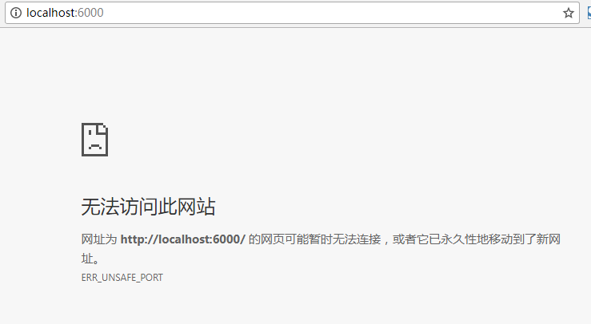

关于Chrome访问6000等端口报ERR_UNSAFE_PORT的问题
/比谁倒霉/ 记录一下一个Chrome的坑：访问6000等端口报ERR_UNSAFE_PORT的问题。
问题出现
当把服务端口改为6000后，使用Chrome访问不了，习惯性的以为服务没起来，各种检查后，注意到浏览器提示的信息有异常。

于是本着换个浏览器试试？的原则，访问成功了… - -！
关于ERR_UNSAFE_PORT
于是一番搜索下来，发现很多人遇到这个问题。解决方法：换个端口或者修改Chrome设置（懒…网上搜…）。
事已至此，问题出现在Chrome认为某些端口是不安全的，防止被人利用Chrome干坏事，就屏蔽了…使用Chrome内核的浏览器应该都有此问题。有人找出了chromium源码。
// The general list of blocked ports. Will be blocked unless a specific |
其他患者的声音
The reason it’s called unsafe is not because it’s unsafe to Chrome, it’s because it’s unsafe to those services, where an attacker may try to use Chrome as a proxy to attacking services on those ports. More explanation here:
http://jazzy.id.au/default/2012/08/23/why_does_chrome_consider_some_ports_unsafe.html
from:https://superuser.com/questions/188058/which-ports-are-considered-unsafe-on-chrome
So, why does Chrome refuse to connect to some ports? Because the Google engineers has gone through the list of well known ports, and worked out how tolerant the protocols that use these ports are to being sent HTTP requests, and if they are tolerant, they’ve marked it as unsafe and so blocked it, to prevent Google Chrome from being an open proxy to a secured network. Should all web browsers do this? Probably.
@https://jazzy.id.au/2012/08/23/why_does_chrome_consider_some_ports_unsafe.html
感兴趣的姐姐可以继续往下探究。